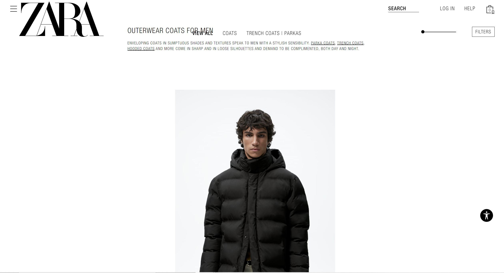
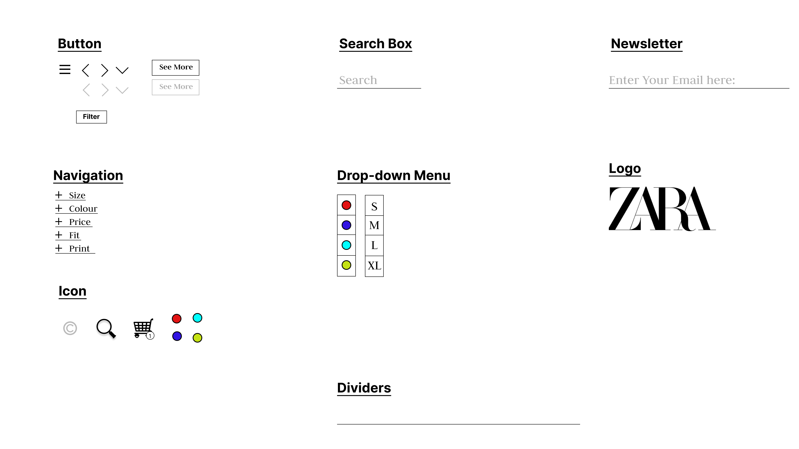
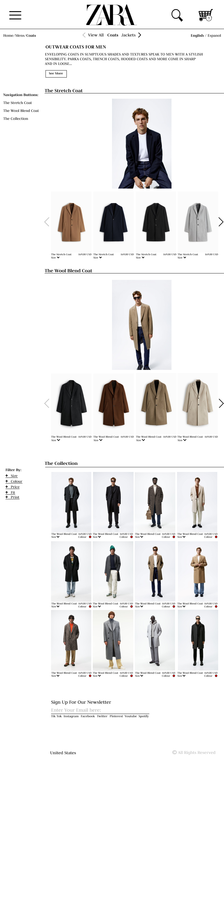

Responsive Redesign: ZARA
Recreating Zara's homepage to improve its usability and accessibility

Zara is an impressive global company. However, its website is surprisingly bad for such a large company.
Several reasons for this includes the horrible typefaces and an extremely confusing navigation system. I will first analyze
the usability, learnability, memorability, and accessibility to explain why Zara has a poor website design.
Usability:
the goal of the user is to quickly browse through the jacket section, compare prices and style, and then choose the type that fits the user the most. However, Zara’s website fails in aiding the user in achieving his/her goal through several points:
User Control: There are buttons that lead you into a page, but no buttons to lead you out so that you can easily navigate to other clothing sections
Affordances: There are a lot of buttons that have poor direction on what they do and how to use them.
Consistency: Some categories list out all the clothing related to the category in an online store format, and some categories only list a special style with descriptions that is reminiscent of an art exhibition. They are scattered and confuse the user.
Learnability:
Zara makes it tough to know where to navigate, and how to navigate. I will outline several specific problems below:
Clothing Size: The button to choose a clothing sign is a button with a plus inside. There is nothing beside it mentioning its function.
Filters: There are no indications on what the filter is referring to. There are pictures of clothes that do not have any price, and some that do.
Clothing Selection: For the category that is shown as an art exhibition format, it is especially odd that the showcase pictures and the clothes being sold are both clickable. Keep it consistent.
Memorability:
Zara makes it hard to remember where you are on the website. Several major problems are detailed below:
Origin: There is nothing to remind you which links you have gone through to get to the category. This ties in with the lack of buttons to help you backtrack.
Whitespace: There is a lot of whitespaces between the images. This makes it hard for users to compare the images to see the difference in styles, and which one suits their taste better.
Location: For the art exhibition category style, there are no sidebars to help you navigate through the different styles, and also the name of the style you last saw.
Accessibility:
I will be using WAIVE to help in my critique of the accessibility of the Zara webpage. Several WAIVE suggestions are listed below:
Empty Button: The clothing size button is just a circle with a plus. No adjacent text and no affordances nearby to suggest that the button is meant for clothing sizes.
Redundant Link: There is a redundant link for the clothing because the name of the clothing and the image direct to the same link. I believe that it does not matter too much, but it might be good to keep it to the image or the hypertext to maintain consistency.
Very Small Text: For the description of the type of category, WAIVE mentions that the text is very small. This is true especially since the description is a subtitle. To separate the subtitle from the normal text, it should be enlarged or otherwise removed if it is not important.
Visual Redesign:
In this section, I will be using the problems listed above to improve the Zara website. I will first use Balsamiq to create a wireframe as a low-fidelity prototype.
Visual Design Guide:
Next is the visual design guide. In order to maintain the design philosophy of the original website, a contrasting colour focus was used along with several reused assets.

Figma:
The high-fidelity prototype for desktop, tablet, and mobile versions are outlined below.



Website Prototype:
Using all the concepts above, I will now create a website prototype. You can view this using the link here:
Link